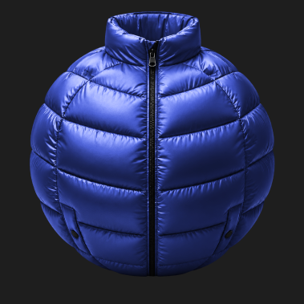

Puffer: realism pass
How far real-time 3D goes toward photo realism on one sphere. Same renderer and frame budget on both sides. Drag either one to turn and tilt it.
Loading…

Loading…
- Lighting: a real photo-studio HDRI with two softboxes replaces the synthetic room, and AgX tone mapping keeps the color less saturated, more like a photo.
- Fabric: a 4K normal map holds the crinkled nylon creases, wrinkles gathered at every seam, and stitching. A roughness map keeps the puffs glossy and the creases dull.
- Shape: the shell is inflated with Blender's cloth solver: pinned along every stitch line, given a little spare fabric and pumped up with internal pressure. The puffs come out uneven, and the slack gathers into real wrinkles at the seams.
- Collar: rolled edge, dark lining inside, topstitching under the fold and a seam bead where it joins the body.
- Shadows: the key light casts real-time shadows, so the collar, zip and pull tab shade the body as it turns. Contact shading comes from ambient occlusion baked in Blender, which costs nothing at runtime.
- Garment cues: hanging zipper pull, storm-flap edges along the zip, elastic hem binding, chest patch, welt pockets with snaps.
- Cost: 980 KB model (was 310 KB), mostly the 4K normal map, plus a 1.4 MB HDRI shared by every sphere on a page. Shadows add one extra render of the sphere per frame, so on a page with four spheres they'd suit the active one only.